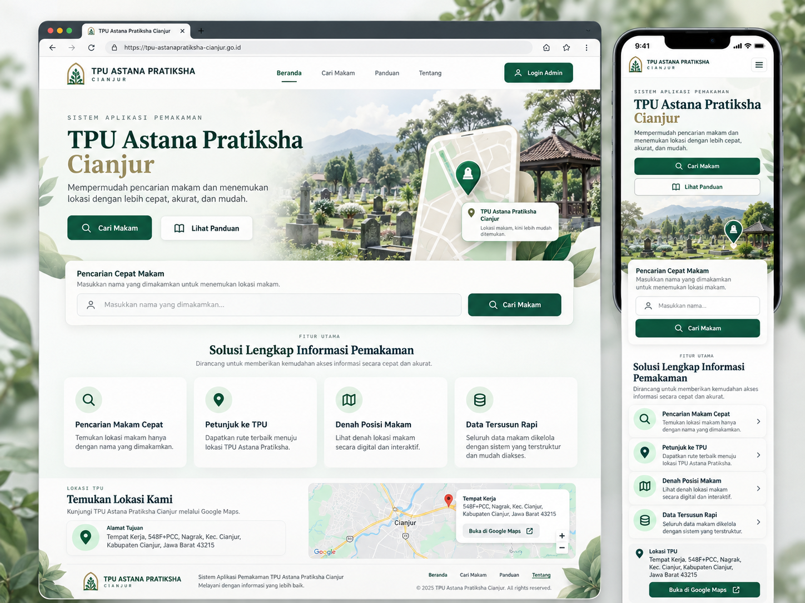
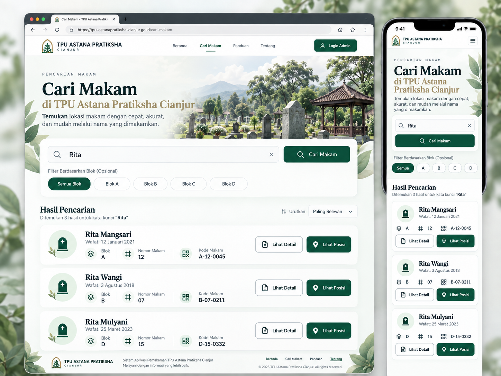
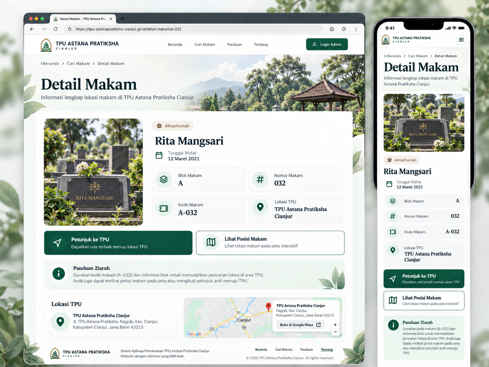
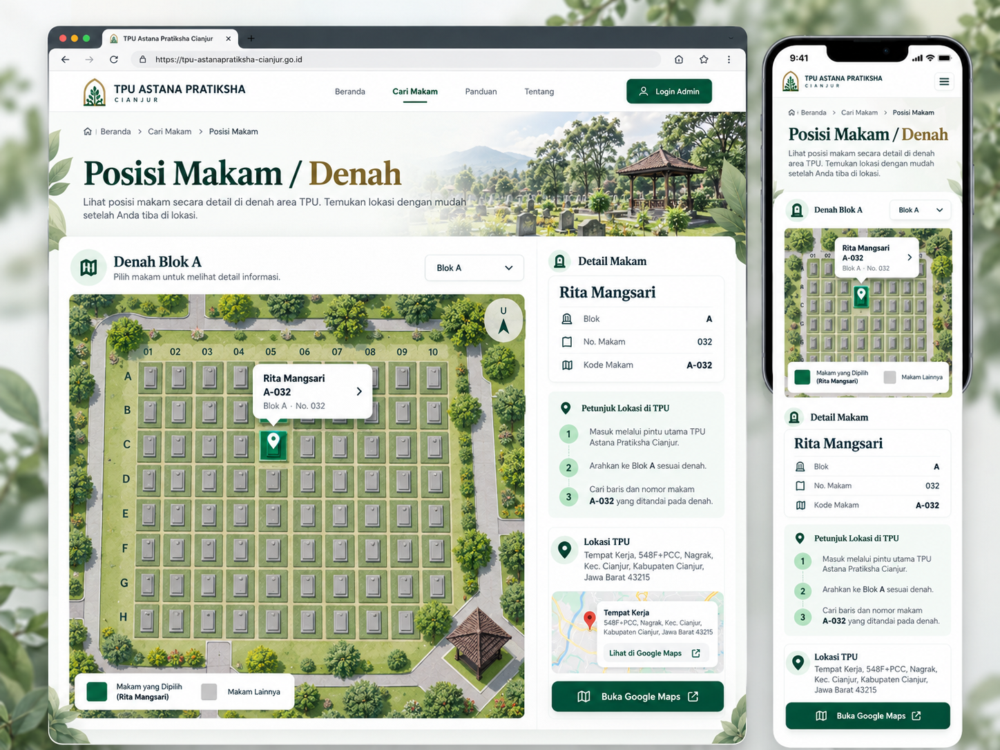
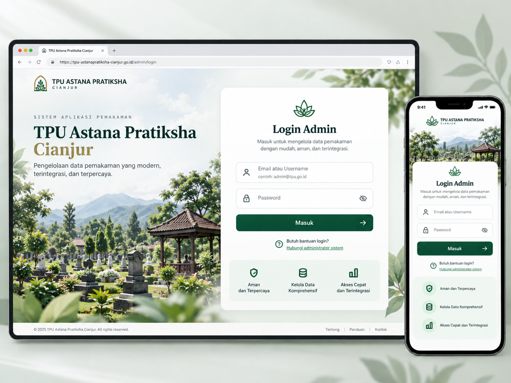
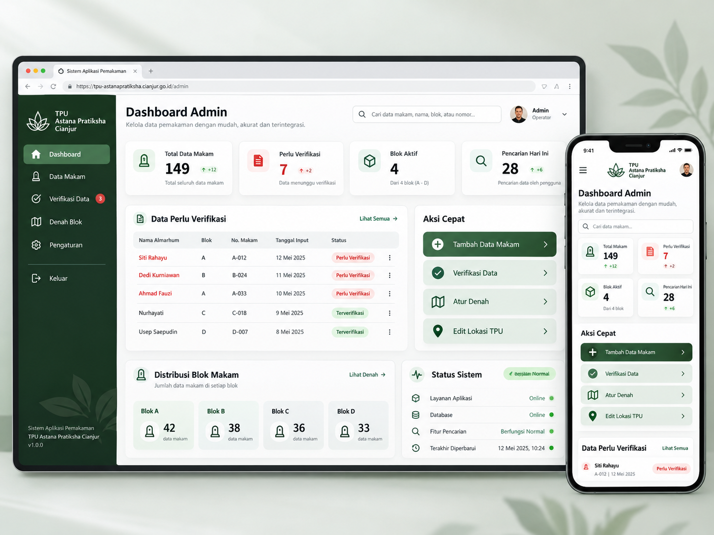
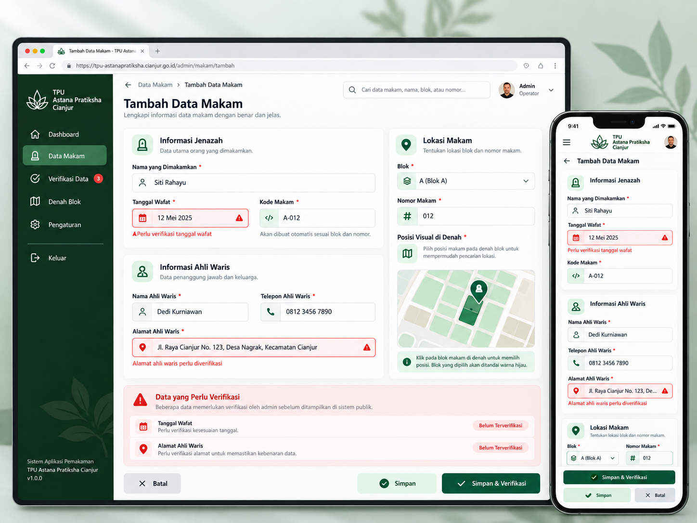
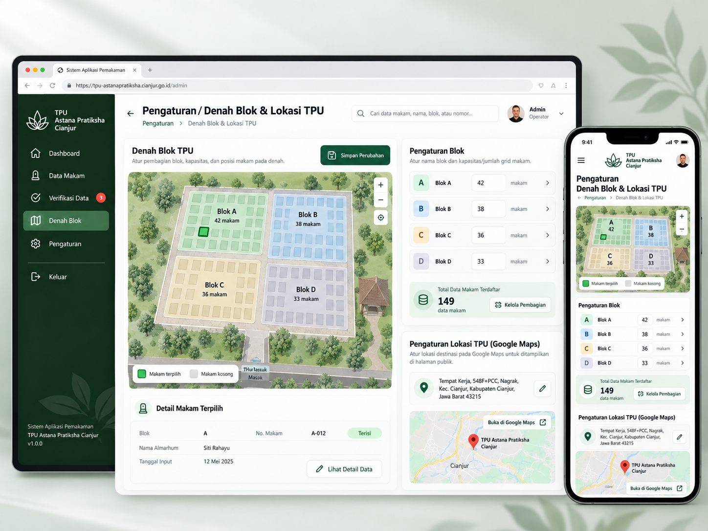

Referensi Visual Web Aplikasi
Mockup adalah referensi desain. Data, foto, alamat, dan angka pada mockup dapat berupa dummy. Foto makam bersifat opsional pada aplikasi final.
01 Landing Page Beranda

02 Cari Makam

03 Detail Makam dengan Foto Opsional

04 Posisi Makam Denah

06 Login Admin

07 Dashboard Admin

08 Tambah Edit Data Makam

09 Pengaturan Denah dan Lokasi
